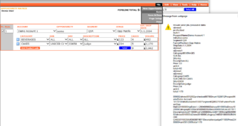

Angry reading stupid government version (week old and still changing data) ? Check this one ;-)
uPlot charts works similar like Grafana - click in legend 2 On/Off particular district, select part to zoom or double click to unzoom.
Table can sort - click in header columns up/down.
(IE compatible except uPlot charts)
Rich Foods demo (2004)
Offline DB form Opportunity Matrix (SPA IE only,
File/New Opportunity creates new main document, Add Product code button creates sub documents, all was
saved @once by File/Save - sent in a field 2 LN Agent, there was also autosave feature)
POC HTML form simulating word document, double click save content (HTA 2007?).
Operational events transformation - (MSV Elektronika, s.r.o.) (4/2016), made to work similar in FF (3.6+)/IE/Chrome.
Single page processing local (ev. online) loco text data. Page generated from XL/VB used 2 create/modify data & 6
include files (4x JS, htm & css), uses Functions for interactive Tables - (c)2005-2009 Matt Kruse
(javascripttoolbox.com). Simple graphs created according to spefications 4 MSV, there are fake demo data there.
fixed table header - JS used in Transformace
Simple hierarchy chart build from table and tiny GIFs inspired by Rich manager's page teamselector.
Answer of Stack Overflow question: Is it possible to save form data to a data file on the local computer and then reload that text file back into a form to select those same items?
K6 load test result -> JSON -> HTML SPA (Grafana Dashboard -> uPlot / does not work in IE)
Simple SQL UPDATE
Simulation and comparision to check configuration script composed of simple UPDATE commands.